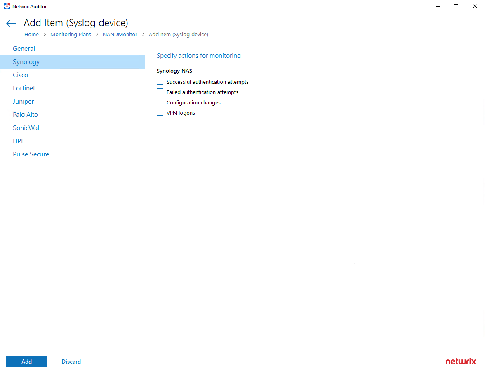

IMPORTANT: These changes to Configuration.xml must be performed after the Team Lead and RnD approval!
Question
How to set up a Network Devices monitoring plan to parse Synology messages?
Answer
Refer to the following steps:
-
In the Netwrix Auditor server, stop Configuration Server, Network Devices Audit, and Logs Collection services. Run the following lines in elevated PowerShell:
Stop-Service -DisplayName "Netwrix Auditor Configuration Server Service" Stop-Service -DisplayName "Netwrix Auditor for Network Devices Audit Service" Stop-Service -DisplayName "Netwrix Auditor Logs Collection Service" -
Backup the
Configuration.xmlfile. You can find theconfiguration.xmlfile by following the provided path:%Working_Folder%\AuditCore\ConfigServer\ -
Open the
Configuration.xmlfile and locate theNetworkDevicesParsersnode. Insert the following lines:<n n="91A79832-E1E5-49F1-8290-F27AB5AEE843"> <a n="Device" v="Synology"/> <a n="Group" v="Synology NAS"/> <a n="Name" v="Successful authentication attempts"/> </n> <n n="9DA8BFF6-F724-4506-BFAD-9FD042A19B56"> <a n="Device" v="Synology"/> <a n="Group" v="Synology NAS"/> <a n="Name" v="Failed authentication attempts"/> </n> <n n="99792BE0-3C4C-4F58-BD12-7ADA170FCBA9"> <a n="Device" v="Synology"/> <a n="Group" v="Synology NAS"/> <a n="Name" v="Configuration changes"/> </n> <n n="9229BB52-4882-409E-A2B4-F9815E1DEE81"> <a n="Device" v="Synology"/> <a n="Group" v="Synology NAS"/> <a n="Name" v="VPN logons"/> </n>Save the changes.
-
Start the previously stopped services:
Start-Service -DisplayName "Netwrix Auditor Configuration Server Service" Start-Service -DisplayName "Netwrix Auditor for Network Devices Audit Service" Start-Service -DisplayName "Netwrix Auditor Logs Collection Service" -
Create an item in the Network Devices monitoring plan. Prior steps create a separate tab for Synology NAS.
 -
After the item is added, a folder with parsing rules for Synology is created:
C:\ProgramData\Netwrix Auditor\SyslogCollection\Data\*\Config.xml